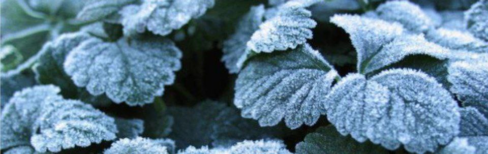
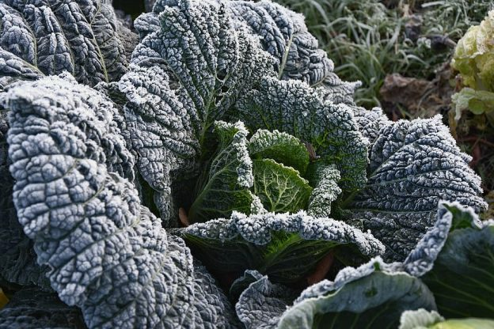
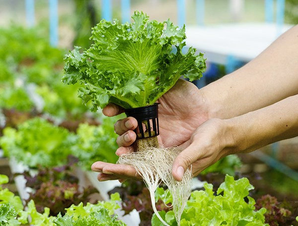
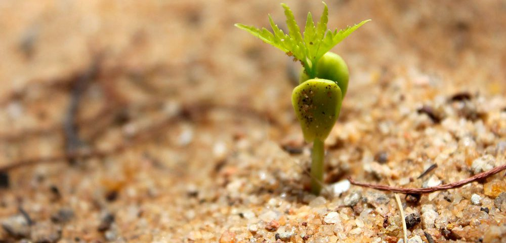
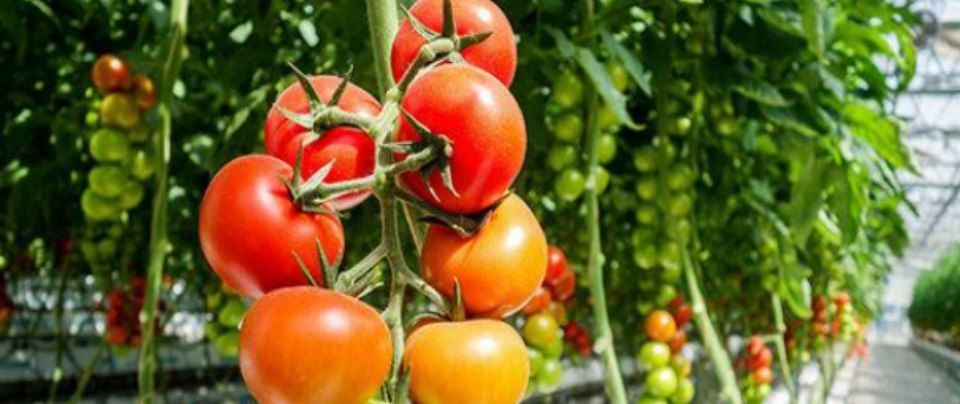
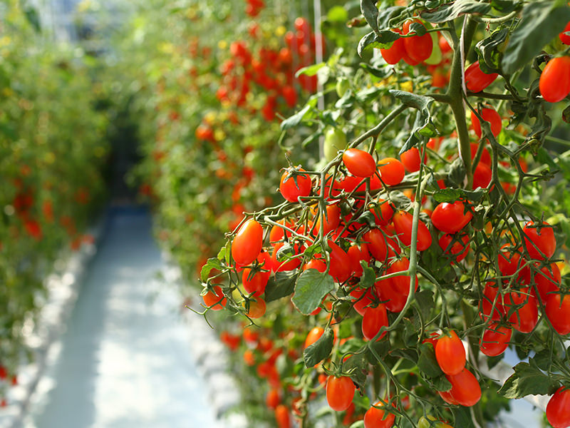

En el presente proyecto, mencionaremos la propuesta que tenemos planeado llevar a cabo en la institución monteclaro, el tema central de nuestro proyecto girara entorno al cultivo de hortalizas, estas son de mucha importancia para alimentación y buena nutrición de la familia, sus hojas, frutos, raíces, tallos y flores son consumidos para satisfacer las necesidades de nuestro organismo, por su alto contenido de minerales, vitaminas y proteínas. También hablaremos de su correcto procesamiento para que tenga un crecimiento normal y saludable para así poder ingerirlo en las distintas comidas del día a día, de su historia. ¿Que son las hortalizas? y todo lo teórico sobre estas mismas, para que el lector entienda todos los antecedentes de las hortalizas y tenga conocimiento sobre el producto que se va producir.
Hacer un cultivo de hortalizas frescas, de muy buena calidad y comprometernos al máximo en la producción para brindar un producto 100% cultivado naturalmente sin necesidad de utilizar químicos que aceleren el crecimiento de nuestras plantas, para hacerles llegar estos vegetales a las personas que quieran cuidar su salud y así generar confianza en el consumidor.
Llegar a convertirnos en un real medio de desarrollo para la producción de plantas para nuestro colegio, es nuestro principal objetivo. A través de la implementación de novedosas técnicas productivas y comerciales, queremos generar un cambio radical a la experiencia del cultivo y compra de plantas.
La problemática actual en cuanto cultivo de hortalizas es la producción con abonos químicos o
agroquímicos como herbicidas o fertilizantes que en primer lugar a afectan la salud y deterioran los
suelos, pues muchos de estos productos contienen sustancias que al pasar del tiempo no permiten la
buena producción de los cultivos.
Además, los costos son muy altos y muchos de los campesinos que se dedican a esta labor invierten
más y obtienen menos ganancias, A si mismo aquellas que se comercializan en plazas de mercado llevan
demasiado tiempo y al llegar a
los hogares se deben consumir inmediatamente porque ya llegan secas o en mal estado.
Entonces proponemos unas hortalizas orgánicas que no contengan ni una sola pizca de estos productos
químicos dañinos.
Los problemas que debemos de abordar en el vivero de hortalizas son los químicos que utilizan en estas, también los productos dañados y con golpes que pueden sufrir durante el camino hacia nuestra despensa. Debemos abordar estos problemas ya que si no los solucionemos podemos tener problemas de salud con los químicos que pueden tener las hortalizas y porque algunas de estas están dañadas. “Los Relatores Especiales señalaron que las investigaciones demuestran que los plaguicidas son responsables de unas 200.000 muertes por intoxicación aguda cada año. Casi el 99% de estas muertes ocurre en países en desarrollo, donde la salud, la seguridad y las regulaciones ambientales son más débiles.” Como debemos saber Colombia es un país en desarrollo así que aquí también se estarían produciendo estas muertes por químicos en hortalizas. Algunas de las causas de muertes por hortalizas aparte de los químicos es el mal manejo de cuidado de estas, ya que algunas si no se cultivan bien pueden ser muy toxicas. Si no tratamos estos problemas como el mal manejo, los químicos y mala cultivación de las hortalizas habrá muchos problemas a futuro como:
Los primeros cultivos de hortalizas se remontan a miles de años en la historia. La inclusión en la
dieta de plantas comestibles cultivadas en huertos, supuso un punto de inflexión y un cambio muy
positivo en la evolución de la alimentación humana.
El origen de la labranza de hortalizas y verduras es posterior, en al menos un millar de años, al
cultivo de cereales como el trigo, el arroz o el maíz. El trabajo en un huerto de las hortalizas
proviene de la recolección de leguminosas y bayas, del mismo modo en que el cultivo de cereales
proviene de la recolección de gramíneas salvajes.
El cultivo de hortaliza apareció en entre los años 7.000 y 5.000 de nuestra era. Surgió, más o menos
en la misma época, en Anatolia y el Sureste asiático, en China y en América central, y
posteriormente en los Andes.
El cultivo de hortalizas constituye un invento en la medida en que supone hacer el experimento de
obtener plantas comestibles, o plantas cuya baya o fruto era comestible, y trasplantarlas
directamente, o por medio de semillas, a otro terreno.
Sabemos que las hortalizas tienen una fuerte demanda y consumo en la sociedad actual, porque estas plantas tienen múltiples funciones en la vida cotidiana de los seres humanos como lo son:
Situación de heladas en cultivos de hortalizas Las situaciones de helada pueden tener consecuencias muy diferentes según la intensidad de la helada, del estado de cultivo y de las variedades cultivadas. En los cultivos de hortalizas anuales en pleno campo, el impacto de las heladas será decisivo, destruyendo las plantas en casos severos.
 El estado de arranque de plántulas de (tomate…) después del trasplante o del estado de emergencia después de la siembra (frijoles…) es particularmente sensible a las condiciones climáticas y las deficiencias nutricionales. En condiciones adversas, el arranque y la emergencia de las plántulas se encuentran atrasados y según la duración del estrés, la viabilidad de las plantas está amenazado. Además de los problemas de finales de la vegetación y el crecimiento, el desarrollo radicular débil afectará el equilibrio de la planta con el ciclo de producciones perturbados y heterogéneos (pequeño calibre…).
 Para optimizar el inicio rápido de las plantas jóvenes o emergencia de la siembra se recomienda implementar un PNE (Programa de Nutrición y Estimulación) completo para volver a movilizar las funciones biológicas y nutricionales de los suelos con una selección de fertilizantes orgánicos específicos (VEGETHUMUS, ORGA 3, ACTIMUS…) y la aplicación de un estimulador de crecimiento de raíces (OSIRYL) con el aporte de suplementos nutricionales por aplicación foliar y / o goteo (ANTYS, NUTRIBIO+, NUTRIKALI, ANTYS PMg).
Las disfunciones nutricionales relacionadas en primer lugar a los suelos desequilibrados y a numerosos estreses (climáticos…) son responsables de los bajos rendimientos y problemas cualitativos de hortalizas.
 La implementación de PNE (Programas de Nutrición y Estimulación) adaptada a los suelos y los cultivos implica la selección de fertilizantes orgánicos (VEGETHUMUS, ORGA 3, ACTIMUS…) que promueven la mejora física y biológica de los suelos (textura, materia orgánica…). Estos programas tienen en cuenta la optimización de la nutrición por una reactivación de la actividad radicular (OSIRYL) en situaciones de alta carga (tomates…) sino también en situaciones de alta salinidad. El aporte de suplementos nutricionales (ANTYS, NUTRIBIO, NUTRIKALI) permite corregir rápidamente algunas deficiencias o carencias nutricionales mediante una aplicación foliar o por goteo. PROBLEMAS CRIPTOGÁMICOS DE LOS SUELOS El problema de la fatiga de los huertos, vinculados a menudo por falta de rotaciones y de materias orgánicas activas, resulta en una caída de rendimiento y de calidad. Esta situación conduce al desarrollo de enfermedades oportunistas (fusarium, nemátodos…) realzadas por el mismo estado de debilidad de los cultivos.
¿De dónde vinieron y desde cuándo comemos las hortalizas que hoy llevamos a la mesa? ¿Cuánto le debe
la salud humana a todos los huertos y jardines de hace mucho tiempo?
AJÍ: El cultivo del ají, planta originaria de América Central y del Sur, se remonta a más de 6.000
años, precediendo incluso la invención de la alfarería, según un estudio publicado este jueves en la
revista Science.
CEBOLLA: Se conserva bien, es fácil de transportar, y versátil en climas y suelos varios. Por eso su
cultivo es inmemorial, al menos desde hace 5.000 años en China e India.
PATATA O PAPA: La papa o patata fue cultivada por primera vez entre los años 8001 y 5000 a. C. en
una región que comprendería lo que hoy es el sur de Perú y el noroeste del Altiplano boliviano.
Desde entonces se ha extendido por todo el mundo y se ha convertido en un alimento básico en la gran
mayoría de países del globo.